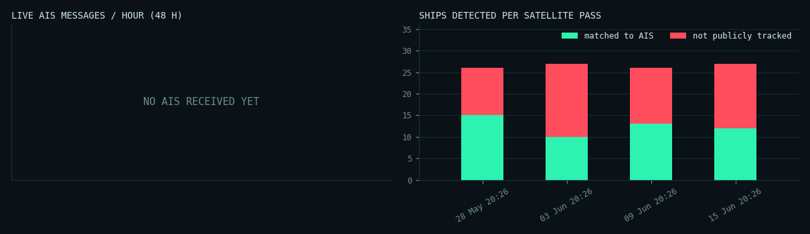

SIMULATION // SYNTHETIC SCENES WITH KNOWN GROUND TRUTH
Simulation: the whole pipeline with a known answer
Four synthetic Sentinel-1-like scenes with planted ships, simulated AIS, two fixed platforms, rougher sea in pass 3 and an AIS feed outage in pass 4. Because every ship is known, detection accuracy and the "dark" labels can be checked exactly. Synthetic radar is easier than real radar; real results are on the sector pages.
Passes simulated
4
Ships matched
50
Not tracked
56
Flags downgraded
28
Map · pass with AIS outage
Showing S1-demo-4: every flag is low confidence because the AIS feed had a 25-minute gap, so the system refuses to call these ships dark.
matched to AISnot tracked · high confidence
not tracked · low confidence
Pass log
| pass | ships | matched | not tracked | low conf. | match rate | AIS msgs | feed gap |
|---|---|---|---|---|---|---|---|
| S1-demo-4 | 27 | 12 | 0 | 15 | 44% | 225 | 25 min |
| S1-demo-3 | 26 | 13 | 11 | 2 | 50% | 398 | 0 min |
| S1-demo-2 | 27 | 10 | 11 | 6 | 37% | 321 | 0 min |
| S1-demo-1 | 26 | 15 | 6 | 5 | 58% | 483 | 0 min |
Telemetry
